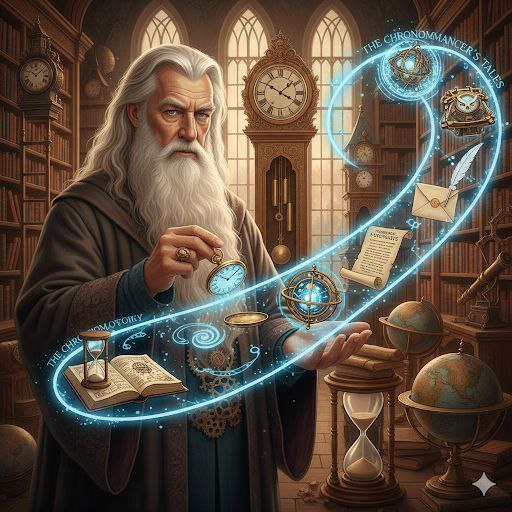

Головна
Хронологія фільму:
- «Гаррі Поттер і Філософський Камінь» (1991-1992)
- «Гаррі Поттер і Таємна Кімната» (1992-1993)
- «Гаррі Поттер і В’язень Азкабану» (1993-1994)
- «Гаррі Поттер і Келих Вогню» (1994-1995)
- «Гаррі Поттер і Орден Фенікса» (1995-1996)
- «Гаррі Поттер і Напівкровний Принц» (1996-1997)
- «Гаррі Поттер і Смертельні Реліквії» (1997-1998) (розділено на 2 фільми)

Актори
Серіал HBO (2026)
- Гаррі Поттер — Домінік Маклафлін
- Герміона Ґрейнджер — Арабелла Стентон
- Рон Візлі — Аластер Стаут
- Албус Дамблдор — Джон Літгоу
- Северус Снейп — Паапа Ессієду
Оригінальні фільми (2001–2011)
- Гаррі Поттер — Денієл Редкліфф
- Герміона Ґрейнджер — Емма Вотсон
- Рон Візлі — Руперт Ґрінт
- Албус Дамблдор — Річард Гарріс / Майкл Гембон
- Северус Снейп — Алан Рікман
- Лорд Волдеморт — Ральф Файнз

Серії
Основна серія книг та фільмів
- Гаррі Поттер і філософський камінь (книга: 1997, фільм: 2001) [1, 2].
- Гаррі Поттер і таємна кімната (книга: 1998, фільм: 2002) [1, 2].
- Гаррі Поттер і в'язень Азкабану (книга: 1999, фільм: 2004) [1, 2].
- Гаррі Поттер і келих вогню (книга: 2000, фільм: 2005) [1, 2].
- Гаррі Поттер і Орден Фенікса (книга: 2003, фільм: 2007) [1, 2].
- Гаррі Поттер і Принц-напівкровка (книга: 2005, фільм: 2009) [1, 2].
- Гаррі Поттер і Смертельні реліквії (книга: 2007, фільм розділений на дві частини: 2010 та 2011) [1, 2].
Цікаві факти
Факти про Гаррі Поттера
- Спільна дата: Гаррі Поттер і Джоан Ролінґ народилися в один день — 31 липня.
- Дементори: Це втілення депресії, яку пережила авторка.
- Очі Гаррі: У книзі зелені, у фільмі — блакитні (через алергію актора на лінзи).
- Хоґвортс: Назва походить від квітки, яку Ролінґ бачила в ботанічному саду.
- Рон Візлі: Письменниця ледь не вбила цього персонажа в середині серії.
- Платформа 9¾: На вокзалі Кінгс-Крос реально існує фотозона з візком у стіні.
- Снейп: Алан Рікман був єдиним актором, хто знав фінал історії ще до зйомок.
Чому мені подобається цей фільм
Коротко, чому мені подобається цей фільм
- Магічна атмосфера: Детально продуманий світ Гоґвортсу, який дарує відчуття казки та втечі від реальності.
- Живі герої: Ми бачимо, як персонажі ростуть, помиляються та дорослішають, що робить їх близькими глядачу.
- Сильні цінності: Історія вчить справжній дружбі, сміливості та тому, що любов сильніша за будь-яке зло.
- Естетика та музика: Легендарний саундтрек і візуальні ефекти створюють неповторний стиль, який не застаріває навіть у 2026 році.
- Ностальгія: Для багатьох це фільм, з яким вони зростали, що дарує почуття затишку при кожному перегляді.